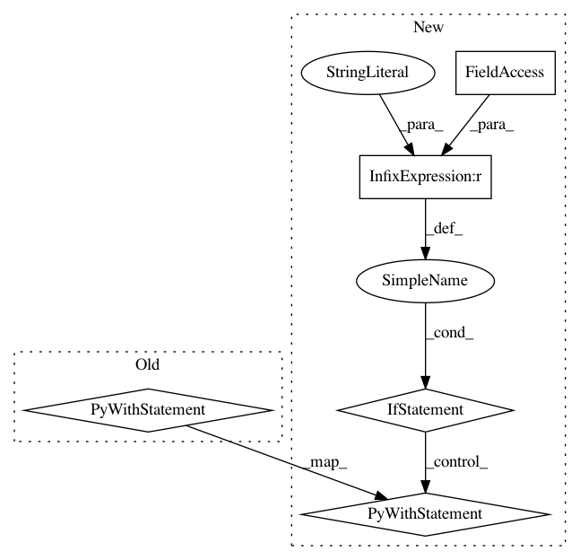

83c2a211d87c89ab460dc08c105aba1e4673529d,preprocess.py,,main,#,52
Before Change
def main():
print("Preparing training ...")
with codecs.open(opt.train_src, "r", "utf-8") as src_file:
src_line = src_file.readline().strip().split()
_, _, nFeatures = onmt.IO.extract_features(src_line)
fields = onmt.IO.ONMTDataset.get_fields(nFeatures)
print("Building Training...")
train = onmt.IO.ONMTDataset(opt.train_src, opt.train_tgt, fields, opt)
print("Building Vocab...")
After Change
def main():
if opt.data_type == "text":
print("Preparing training ...")
with codecs.open(opt.train_src, "r", "utf-8") as src_file:
src_line = src_file.readline().strip().split()
_, _, nFeatures = onmt.IO.extract_features(src_line)
fields = onmt.IO.ONMTDataset.get_fields(nFeatures)
elif opt.data_type == "img":
fields = onmt.IO.ONMTDataset.get_fields(data_type="img")
print("Building Training...")
train = onmt.IO.ONMTDataset(opt.train_src, opt.train_tgt, fields, opt)
print("Building Vocab...")
onmt.IO.ONMTDataset.build_vocab(train, opt)
In pattern: SUPERPATTERN
Frequency: 4
Non-data size: 5
Instances
Project Name: OpenNMT/OpenNMT-py
Commit Name: 83c2a211d87c89ab460dc08c105aba1e4673529d
Time: 2017-11-01
Author: dengyuntian@gmail.com
File Name: preprocess.py
Class Name:
Method Name: main
Project Name: tsurumeso/waifu2x-chainer
Commit Name: 2db45d09c4e6c8523a0039f7485fd428ac5f415c
Time: 2017-01-07
Author: nstm101339@gmail.com
File Name: cgraph.py
Class Name:
Method Name:
Project Name: ray-project/ray
Commit Name: 101c215125c4142e853985c53e62c9b4b73dc230
Time: 2020-06-12
Author: mehrdadn@users.noreply.github.com
File Name: python/ray/tests/test_tempfile.py
Class Name:
Method Name: test_tempdir_long_path
Project Name: tsurumeso/waifu2x-chainer
Commit Name: f992515537c72c9b2a74cd213416a4d7956ef639
Time: 2018-10-16
Author: tsurumeso@gmail.com
File Name: appendix/benchmark.py
Class Name:
Method Name: benchmark